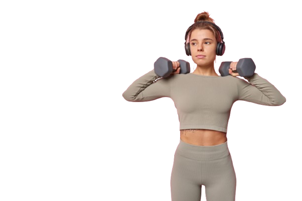
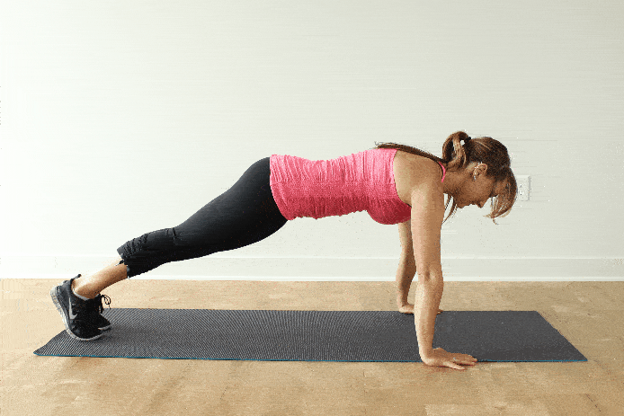
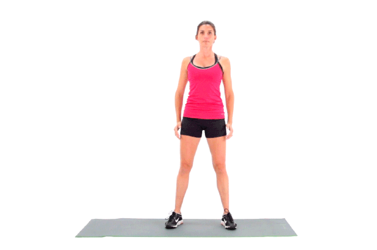
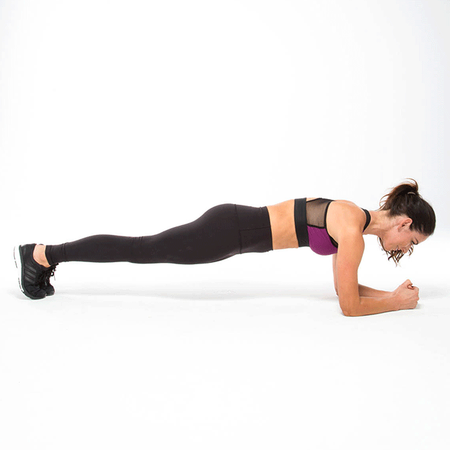
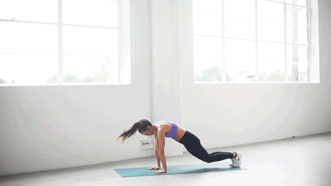
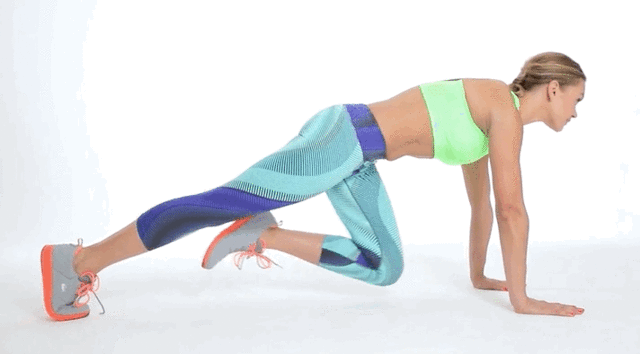
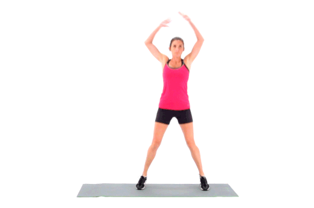
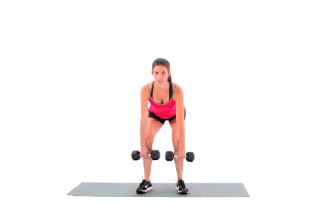
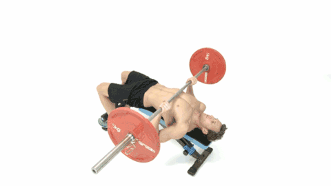
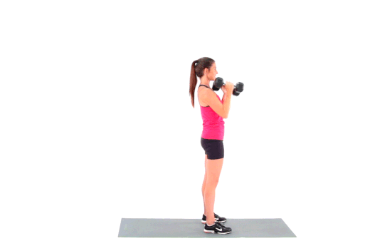

Fitnes itirə biləcəyiniz şeylərdən ibarət deyil. Nə qazana biləcəyinizlə bağlıdır.
Fitness sağlamlığın, fiziki qabiliyyətin və ümumi rifahın inkişaf etdirilməsi üçün həyata keçirilən fiziki fəaliyyətlər və məşqlərin ümumi bir adıdır. Fitness təkcə bədənə deyil, həm də zehni sağlamlığa təsir edir və insanın həyat keyfiyyətini artırır.Fitness sağlam həyat tərzinin ayrılmaz hissəsidir və hər kəsə fərqli şəkildə uyğunlaşdırıla bilər. Gündəlik olaraq kiçik addımlar atmaq belə böyük dəyişikliklərə səbəb ola bilər!

10 Ən Yaxşı Məşq və Onların Faydaları

Push-ups
- Başlama mövqeyi: Yerdə üzü üstə yatın, əllərinizi çiyin genişliyində yerləşdirin və ayaqlarınızı birləşdirin.
- Əllər yerə qoyulmuş vəziyyətdə, bədəninizi düz tutaraq, dizlərinizin və ya ayaqlarınızın uclarını yerə qoyun (daha çətin versiya üçün ayaqlarınız düz olmalıdır).
- Qarın və bədəninizi yerdən qaldırın, qollarınızı çiyninizin üzərinə doğru əyin və sonra yavaşca bədəninizi yerə endirin, amma sinəniz yerə toxunmasın.
- Sonra yenidən əllərinizi istifadə edərək bədəninizi yuxarı qaldırın.
Sinə, çiyin və qollarınızı gücləndirmək üçün ən sadə, lakin təsirli məşqlərdən biridir.Bədənin balansını və stabilizasiyasını artırır və Zədə riski azdır, evdə asanlıqla edilə bilər.

Squats
- Başlanğıc mövqeyi: Ayaqları çiyin genişliyində açın, kürəyi düz saxlayın, əlləri önə uzadın.
- Aşağı enmək: Dizləri bükərək çanağı arxaya çıxarın, dizlər ayaq barmaqlarını keçməsin.
- Düzgün mövqe: Çanağı diz səviyyəsinə gətirin, topuqlar yerdə olsun.
- Yuxarı qalxmaq: Topuqlardan güc alaraq başlanğıc mövqeyinə qayıdın.
Alt bədən əzələlərini gücləndirir, balansınızı və sabitliyinizi artırır.

Plank
- Başlanğıc mövqeyi: Dirsəkləri çiyin altında, ayaq barmaqları yerdə, bədəni düz xəttə gətirin.
- Çanağı sabit saxlayın: Çanağı nə çox yuxarı, nə də çox aşağı salmadan düz tutun.
- Qarın əzələlərini sıxın: Qarını sıxaraq bədəni sabit saxlayın.
- Vaxtı qoruyun: 20-30 saniyə başlayın və tədricən artırın.
Əsas əzələlərinizi tonlamaq və sabitliyiniz üzərində işləmək üçün əla məşqdir.
Lunges
- Başlanğıc mövqeyi: Ayaqları çiyin genişliyində açın, əlləri yanlarda saxlayın.
- Addım atmaq: Bir ayaqla irəliyə uzun addım atın və arxa ayağı yerə sabit saxlayın.
- Bədəni aşağı salmaq: Ön diz 90 dərəcə bükülsün, arxa diz yerə yaxın olsun (yerə toxunmasın).
- Başlanğıc mövqeyinə qayıtmaq: Ön ayaqdan güc alaraq durun və digər ayaqla təkrarlayın.
Lunges aşağı bədən əzələlərini gücləndirir, balans və stabilliyi artırır. Həmçinin duruşu düzəldir və funksional güc yaradır.

Burpees
- Başlanğıc mövqeyi: Ayaq üstə durun, əllər yanlarda.
- Aşağı enmək: Əlləri yerə qoyaraq çömbəlin və ayaqları arxaya tullayaraq plank mövqeyinə keçin.
- Döşəmə toxunuşu (opsional): Sinəni yerə toxundurun və dərhal geri qalxın.
- Tullanmaq: Ayaqları geri gətirib qalxın və havaya sıçrayın, əlləri yuxarı qaldırın.
Ürək-damar sağlamlığınızı artırmaq və bütün bədəninizi gücləndirmək üçün güclü məşqdir.

Mountain Climbers
- Başlanğıc mövqeyi: Plank mövqeyinə keçin, əlləri çiyinlərin altında və bədəni düz saxlayın.
- Diz çəkmək: Sağ dizinizi sinəyə doğru çəkin, arxa ayaq yerində qalsın.
- Ayaqları dəyişmək: Sağ ayağı geri qaytarın, sol dizinizi sinəyə çəkin.
- Ritmik hərəkət: Ayaqları sürətli şəkildə ardıcıl dəyişərək hərəkəti davam etdirin.
Ürək dövranınızı sürətləndirərək qarnınızı və əzələlərinizi tonlayır.

Jumping Jacks
- Başlanğıc mövqeyi: Ayaqlarınızı birləşdirin, əlləri bədən yanında saxlayın.
- Ayaqları açmaq: Ayaqlarınızı çiyin genişliyində açın, eyni zamanda əlləri başın üzərinə qaldırın.
- Ayaqları yığmaq: Ayaqlarınızı təkrar birləşdirin və əlləri yanlara endirin.
- Hərəkəti sürətləndirmək: Hər iki hərəkəti sürətli şəkildə təkrarlayın.
-
- Nəfəsə diqqət etmək: Hərəkət edərkən dərindən nəfəs alın və ritmik şəkildə davam edin.
Sadə, lakin təsirli bir məşqdir ki, ürək dövranınızı artırır.

Deadlifts
- Başlanğıc mövqeyi: Ayaqları çiyin genişliyində açın, barbell ayaqlarınızın qarşısında, çubuğu əllərinizlə tutun, kürək düz, baş neytral vəziyyətdə olsun.
- Çubuğu qaldırmaq: Dizləri bükərək, arxadan güc alaraq çubuğu yerə doğru qaldırın, kürəyinizi düz saxlayın.
- Bədəni düz tutmaq: Çubuğu dik vəziyyətə gətirin, ayaqları düz və çanağınız irəli yönəlsin.
- Çubuğu yerə endirmək: Çubuğu nəzarət altında, əvvəlcə çanağı aşağı salaraq və sonra dizləri bükərək yavaşca yerə qoyun.
Arxa, ayaq və qol gücünüzü artırmaq üçün vacibdir.

Bench Press
- Başlanğıc mövqeyi: Çəkiləri barbell-ə yerləşdirin və düz bir bankda arxası üstə uzanın. Ayaqlarınız yerə tam basmalıdır.
- Çubuğu qaldırmaq: Barbell-i yavaşca yuxarıdan tutaraq sinə səviyyəsinə endirin.
- Döşə yaxınlaşdırmaq: Çubuğu sinəyə qədər endirin, dizlər və çiyinlər sabit qalmalıdır.
- Yuxarıya qaldırmaq: Çubuğu sinədən qaldırın və tam uzanmış əllərlə başa qədər qaldırın.
Sinə və qollarınız üçün klassik güc məşqidir.

Bicep Curls
- Başlanğıc mövqeyi: Ayaqlarınızı çiyin genişliyində açın, əllərinizə dumbbell (və ya barbell) tutun, dirsəklər bədənə yaxın olsun.
- Qolları bükmək: Dirsəkləri bükərək dumbbell-ləri yavaşca yuxarı doğru qaldırın, qollarınız tam bükülənə qədər.
- Üst mövqe: Dumbbell-ləri ən yüksək nöqtəyə qaldırdıqda qollarınız tam uzanmalıdır.
- Yavaşca endirmək: Dumbbell-ləri nəzarət altında yavaşca əvvəlki mövqeyə, yəni başlanğıc vəziyyətinə endirin.
Qollarınızı formalaşdırmaq və əzələ kütləsini artırmaq üçün idealdır.
 Ana Səhifə
Xidmətlər
Diyet Planları
Ana Səhifə
Xidmətlər
Diyet Planları